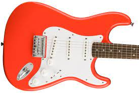
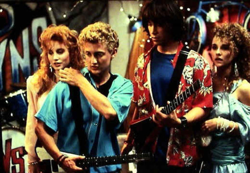

Guitars Are Sick
There are so many kinds of guitars, and a lot of them are super cool looking and make it real easy to shred on, except for bass guitars, bass guitars are LAME and are not easy to shred on, the strings are TOO THICK. But regular guitars are sick.
My First Guitar

My first guitar was a Fender Squier, and it was the coolest thing I had ever seen. It was off-white like Jimi Hendrix's guitar! I tried using my teeth to play the national anthem like he did, but I could barely get the first couple of notes. I moved on to learning how to play Purple Haze, which was also the first song Hendrix learned to play! I was 14 years old and I thought I was the coolest kid in school. I was not, but I thought I was.
My Favorite Guitar To Look At
My favorite guitar to look at is a Gibson Les Paul. It's a classic, and it's the guitar that Slash from Guns N' Roses plays. I love it so much, I have a poster of it on my wall. I stare at the poster for hours on end, thinking about all the ways one can shred, what lessons from shredding I can apply to my life, and how one person can shred so hard that they can change the world. I think about that a lot.
My Dream Guitar

My dream guitar is a Steinberger. They're super weird looking, and they're made out of carbon fiber. This guitar has no head, it's like the headless horseman of guitars, but it's not spooky, it's just fun to play. It's the guitar that Bill and Ted play at the end of the movie Bill and Ted's Excellent Adventure. They're also super expensive, so I'll probably never own one, but I can dream, no one said it was illegal to dream.